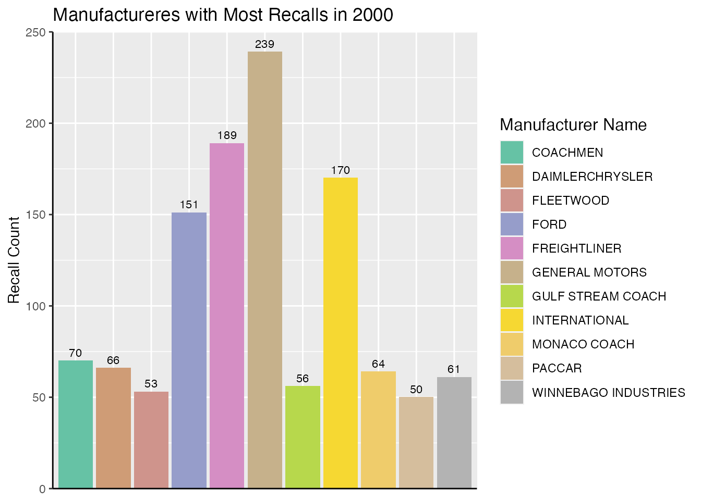
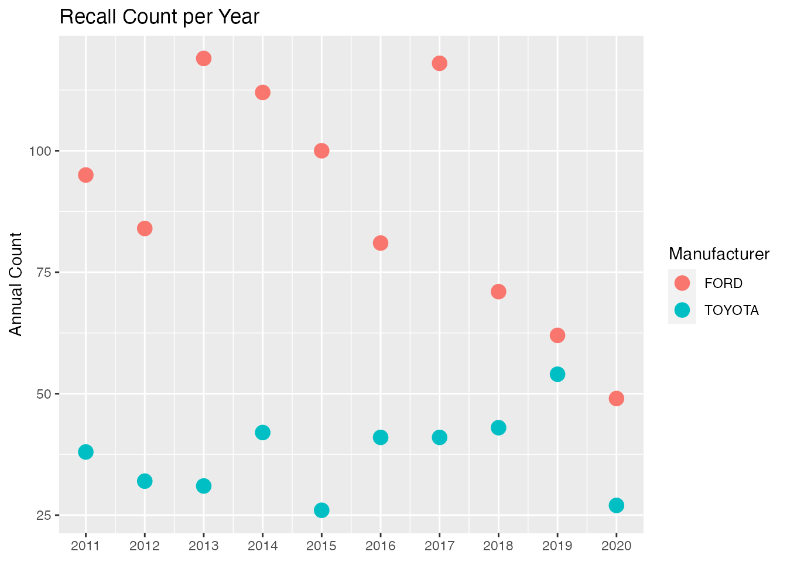

The caRecall package is an API wrapper for the Government of Canada Vehicle Recalls Database (VRD) used by the Defect Investigations and Recalls Division for vehicles, tires, and child car seats. The API wrapper provides access to recall summary information searchable by make, model, and year range, as well as detailed recall information searchable by recall number.
This vignette provides an overview of the functions available in caRecall and provides a demonstration of using the package to extract information from the VRD. In addition to caRecall, this vignette makes use of the dplyr and ggplot2 packages.
An API key is required to run the functions in caRecall and query the Vehicle Recalls Database. The key can be acquired at https://tc.api.canada.ca/en/detail?api=VRDB. The API key can be set in the environment using Sys.setenv(VRD_API = 'your_API_key_here'). Alternatively, instead of setting the API key in the environment, the key can be passed into the caRecall functions as an argument.
caRecall FunctionsThe caRecall package focuses on querying data from the Vehicle Recalls Database and functions fall into the following categories:
The recall_by_make(), recall_by_model(), recall_by_years(), and recall_by_number() functions all retrieve recall summary information from the VRD based on user search terms. An overview of the search terms and function arguments includes:
caRecall also default to a limit of 25.caRecall functions allow the user to specify if partial matches on the search terms are used or not (for example, “Su” would return “Suzuki”, and “Subaru” matches). Note that if partial = FALSE is used, the number of entries returned by the functions may be less than the count provided by the count functions described in the following section which return counts for all partial matches (and is the default behavior of the VRD API).An example of using recall_by_model() to search for the first five recalls by ‘Ford’ in 1998 would be as follows:
recall_by_make("Ford", start_year = 1998, limit = 5)
#> # A tibble: 5 x 6
#> `Recall number` `Manufacturer Na… `Model name` `Make name` Year `Recall date`
#> <chr> <chr> <chr> <chr> <int> <date>
#> 1 1997118 FORD WINDSTAR FORD 1998 1997-06-16
#> 2 1997119 FORD B SERIES FORD 1998 1997-06-17
#> 3 1997124 FORD WINDSTAR FORD 1998 1997-06-23
#> 4 1997165 FORD MUSTANG FORD 1998 1997-09-30
#> 5 1997165 FORD WINDSTAR FORD 1998 1997-09-30Or if a user wanted to search by manufactured year and return the first 10 entries between 1999 and 2001, recall_by_years() could be used:
recall_by_years(start_year = 1999, end_year = 2001, limit = 10)
#> # A tibble: 10 x 6
#> `Recall number` `Manufacturer N… `Model name` `Make name` Year `Recall date`
#> <chr> <chr> <chr> <chr> <int> <date>
#> 1 1993076 MERCEDES-BENZ 300 MERCEDES-B… 2000 1993-05-31
#> 2 1998048 FORD F-350 SUPER… FORD 1999 1998-03-25
#> 3 1998049 FORD F-350 SUPER… FORD 1999 1998-03-26
#> 4 1998067 MAZDA MIATA MAZDA 1999 1998-04-08
#> 5 1998069 FORD SUPER DUTY FORD 1999 1998-04-08
#> 6 1998104 FORD F-350 SUPER… FORD 1999 1998-05-25
#> 7 1998105 FORD F-250 FORD 1999 1998-05-25
#> 8 1998105 FORD F-350 SUPER… FORD 1999 1998-05-25
#> 9 1998105 FORD F-450 SUPER… FORD 1999 1998-05-25
#> 10 1998105 FORD F-550 SUPER… FORD 1999 1998-05-25The count_recall_by_make(), count_recall_by_model(), and count_recall_by_years() all return the number of recalls available in the VRD based on the search terms. It can be used to quickly get a count of recalls prior to making a query for summary information.
For example, if a user is interesting in first determining the total number of recalls by the manufacturer ‘GOODBABY’ for all products manufactured up to 2008, the count_recall_by_make() could be used.
count_recall_by_make("GOODBABY", manufacturer = TRUE, end_year = 1998)
#> # A tibble: 1 x 1
#> `Result Count`
#> <int>
#> 1 47The recall_details() function provides detailed recall information for a specified recall number. The information includes details of what the recall is for (for example, ‘Seats and Restraints’) as well as a description on the reason for the recall. This function can only use a recall number search term and therefore likely requires prior searching using the summary recall functions to determine recall numbers of interest.
Note that each recall number provided to the function results in a separate API call. Accordingly, the rate of API calls is limited to one call per second to stay within the API limit. For example, providing a list of 60 recall numbers to the function would take approximately 1 minute to complete.
For example, if a Ford Windstar with recall number of 1997118 was of interest:
recall_windstar <- recall_details(1997118)
tibble(t(recall_windstar)) # transpose for readability
#> # A tibble: 15 x 1
#> `t(recall_windstar)`[,1]
#> <chr>
#> 1 "1997118"
#> 2 "97S69"
#> 3 "Light Truck & Van"
#> 4 "Camionnette et fourgonnette"
#> 5 "WINDSTAR"
#> 6 "FORD"
#> 7 "27"
#> 8 "Seats And Restraints"
#> 9 "Sièges et dispositifs de retenue"
#> 10 "Safety Mfr"
#> 11 "Sécurité - fabricant"
#> 12 "NOTE: VEHICLES EQUIPPED WITH SECOND ROW BENCH SEATS AND INTEGRATED CHILD SE…
#> 13 "NOTA : Vise les véhicules équipés d’une seconde banquette et du siège intég…
#> 14 "1998"
#> 15 "1997-06-16"In this section, several examples will be shown using caRecall to extract and visualize information of interest.
After getting an API access key from https://tc.api.canada.ca/en/detail?api=VRDB, the key needs to either be set in the environment (as VRD_API) or passed as an argument into each caRecall function.
To check if the VRD API key is in the environment, the following caRecall function can be used:
If the key is in the environment as VRD_API it will return the key value. If not, the function will return an error that the key is not set. The key can be set in the environment using Sys.setenv(VRD_API = "YOUR KEY HERE"). Once it is set, you should be able to leave the api_key argument empty in a caRecall function call.
Lets say we want to look in the VRD for the companies that had the most recalls with the items they manufactured in the year 2000. Fist we could see how many items manufactured in 2000 were recalled in the database.
count_recall_by_years(start_year = 2000, end_year = 2000)
#> # A tibble: 1 x 1
#> `Result Count`
#> <int>
#> 1 2422We could then query the database for the summary information associated with these recalls.
recall_summary_2000 <- recall_by_years(start_year = 2000, end_year = 2000, limit = 3000)
recall_summary_2000
#> # A tibble: 2,422 x 6
#> `Recall number` `Manufacturer N… `Model name` `Make name` Year `Recall date`
#> <chr> <chr> <chr> <chr> <int> <date>
#> 1 1993076 MERCEDES-BENZ 300 MERCEDES-B… 2000 1993-05-31
#> 2 1999056 FIAT CHRYSLER A… NEON CHRYSLER 2000 1999-04-14
#> 3 1999108 FIAT CHRYSLER A… NEON CHRYSLER 2000 1999-06-07
#> 4 1999111 FLEETWOOD TIOGA FLEETWOOD 2000 1999-06-08
#> 5 1999137 POLARIS SNOWMOBILE POLARIS 2000 1999-07-26
#> 6 1999138 MAZDA MPV MAZDA 2000 1999-07-27
#> 7 1999147 MAZDA MPV MAZDA 2000 1999-07-30
#> 8 1999151 GENERAL MOTORS S10 CHEVROLET 2000 1999-08-16
#> 9 1999151 GENERAL MOTORS SONOMA GMC 2000 1999-08-16
#> 10 1999155 GENERAL MOTORS SUNFIRE PONTIAC 2000 1999-08-19
#> # … with 2,412 more rowsNote that we also could have also just set the limit argument to a high enough value that all entries in the database would likely be included in the summary information query; however, this could also result in returning a very large dataset if the number of available entries is very high.
We can count the number of recalls for each company by grouping on the Manufacturer name column and summarizing the count. We’ll only look at manufacturers with recall counts above 50.
counts_manu_2000 <- recall_summary_2000 %>%
group_by(`Manufacturer Name`) %>%
tally() %>%
filter(n >= 50)
counts_manu_2000
#> # A tibble: 11 x 2
#> `Manufacturer Name` n
#> <chr> <int>
#> 1 COACHMEN 70
#> 2 DAIMLERCHRYSLER 66
#> 3 FLEETWOOD 53
#> 4 FORD 151
#> 5 FREIGHTLINER 189
#> 6 GENERAL MOTORS 239
#> 7 GULF STREAM COACH 56
#> 8 INTERNATIONAL 170
#> 9 MONACO COACH 64
#> 10 PACCAR 50
#> 11 WINNEBAGO INDUSTRIES 61There are 11 manufacturers with greater than 50 recalls for products manufactured in 2000.
nb.cols <- 11
mycolors <- colorRampPalette(brewer.pal(8, "Set2"))(nb.cols)
counts_manu_2000 %>%
ggplot() +
aes(x=`Manufacturer Name`, y=n, fill=`Manufacturer Name`) +
scale_fill_manual(values = mycolors) +
geom_col() +
geom_text(aes(label=n), vjust=-.5, size=3) +
labs(y="Recall Count") +
theme(axis.text.x = element_blank(),
axis.ticks.x = element_blank(),
axis.line = element_line(color = "black"),
legend.title = element_text(size = 12),
axis.title.x=element_blank()) +
scale_y_continuous(expand = c(0,0),
limits = c(0,250)) +
ggtitle("Manufactureres with Most Recalls in 2000")
We could also look at how many recalls two manufacturers have had compared with each other over the over the last 10 years (2011 to 2020).
We would start by querying the API for entries with the two manufacturers. This time, we’ll just set the limit to be reasonably high instead of checking the count available in the database first.
manu_comparison_list <- c("Ford", "Toyota")
recall_comparison <- recall_by_make(manu_comparison_list, start_year = 2011, end_year = 2020, limit = 10000)
recall_comparison
#> # A tibble: 1,266 x 6
#> `Recall number` `Manufacturer N… `Model name` `Make name` Year `Recall date`
#> <chr> <chr> <chr> <chr> <int> <date>
#> 1 2009290 TOYOTA CAMRY TOYOTA 2011 2009-10-07
#> 2 2010366 FORD EDGE FORD 2011 2010-10-25
#> 3 2010439 TOYOTA SIENNA TOYOTA 2011 2010-12-13
#> 4 2010463 FORD EDGE FORD 2011 2010-12-23
#> 5 2010463 FORD F-150 FORD 2011 2010-12-23
#> 6 2010463 FORD F-250 SUPER… FORD 2011 2010-12-23
#> 7 2010463 FORD F-350 SUPER… FORD 2011 2010-12-23
#> 8 2010463 FORD F-450 SUPER… FORD 2011 2010-12-23
#> 9 2010463 FORD F-550 SUPER… FORD 2011 2010-12-23
#> 10 2011046 FORD EXPLORER FORD 2011 2011-01-31
#> # … with 1,256 more rowsWe can then plot the total amount of recalls for each year grouped by manufacturer.
recall_comparison %>%
ggplot() +
aes(x=`Year`, color = `Make name`) +
geom_point(stat='count', size=4) +
scale_x_continuous(breaks = seq(2010,2021,1)) +
labs(title = 'Recall Count per Year',
y = 'Annual Count',
color = 'Manufacturer') +
theme(axis.title.x=element_blank()) 
The plot shows a much lower number of recalls in 2020 for both manufactures; however, this is likely because there has not been sufficient time for recalls to have occurred on more recent products.